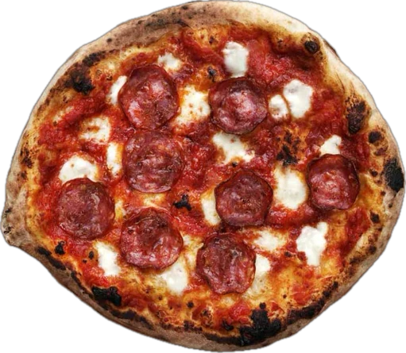
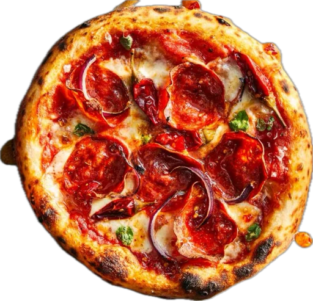

Pizza 1
Napoli is where it all started. Neapolitan pizza is the one original. It was created in the 18th century in Naples, Italy and it all because of poverty. The poor inhabitants of Naples came up with something filling and delicious, but, most of all, affordable. So pizza came to life, and thank God for that!
Neapolitan pizza has a thin, crispy yet fluffy light crust. It’s not made to handle a lot of toppings, just a couple of light toppings and it’s good to go. Extra info: Did you know Neapolitan pizza is so thin you need a knife and fork to eat it? And did you know a pizza so thin and light is cooked in less than two minutes? Yum!

Pizza 2
The Margherita is Pomodoro or San Marzano tomatoes, mozzarella di Buffala, extra virgin olive oil, and fresh basil, ingredients that don’t compete with each other. Simple ingredients in an amazing combo.
Sometimes Margherita has extra mozza di buffala or mozzarella from Campania, or fior di latte, for extra richness and creaminess. Extra info: Did you realize pizza Margherita displays the three colors of the Italian flag: red, white, and green, aka tomatoes, mozza, and fresh basil?

Pizza 3
Marinara started as a pizza for… well, sailors and fishermen. Marinara is made with the usual pizza crust, Pomodoro, garlic, oregano, extra virgin olive oil, and sometimes, anchovies. Cheap, delicious, filling, and, boy oh boy, does it go well with rum or wine!

Pizza 4
La Siciliana, also known as sfincione (thick sponge) has a thick, extra fluffy crust with a crunchy exterior.
This pizza is topped with a lot of tomato sauce and cheese is usually added (if it’s added) between the dough and the sauce, stopping the crust getting soggy. Another interesting piece of info about this pizza: It is square. For toppings, it usually has tomatoes, onions, anchovies, and herbs.

Pizza 5
The Roman-style pizza has a thick curst that resembles focaccia bread. Cut into square slices, Roman pizza is usually served al taglio (by the slice). It has small amounts of simple, fresh ingredients.

Pizza 6
Going from Italian to American pizza is quite a jump, especially if you compare the thin Neapolitan with the thick, deep-dish pizza from Chicago, though other variants like New York-style pizza are much closer to the original Neapolitan version.
Its ingredients are added in reverse. Mozzarella on the bottom, meat (ground beef, sausages, usually), then vegetables, and then the tomato sauce, well away from the dough. Sometimes it is sprinkled with Parmesan, sometimes with onion, mushroom, green peppers, and pepperoni beneath the sauce. Extra info: Did you know this pizza takes a full 30-35 minutes to bake?

Pizza 7
Another American staple: the NY pizza! You’ve seen it in movies, we’re pretty sure! It’s that cheesy pizza that melts and gets gooey. It’s that pizza that the women in Sex and the City ate every once in a while, in a slice or two.
This pizza comes in large slices that are elastic enough to be folded in half and a crispy outer crust. It resembles the Margherita, but it’s bigger and a little greasier since it contains more cheese and a mozzarella that is low in moisture. And boy, is it good!

Pizza 8
Also known as gourmet pizza, California pizza was invented in the late seventies. It’s one of the “busy” pizzas in that it contains many ingredients, often all aromatic and different. Chef Ed LaDou created a pizza with mustard, ricotta cheese, pate, and red pepper. After this hit, he came up with 250 recipes found in the chain restaurant California Pizza Kitchen.

Pizza 9
The Detroit pizza speaks volumes about the area it became famous in. It was created in the forties in Detroit and was originally baked in a square automotive parts pan. Yes, it was originally baked in the spare industrial entrails of this city’s factories.
From bottom to top, the Detroit pizza includes toppings such as pepperoni, brick cheese spread to the edges of the pie, creating a caramelized cheese base, and tomato sauce added on top. It has a thick crust, with a crispy, crunchy bite on the outside and an airy, tender, soft interior. Sometimes it has onions or olives.